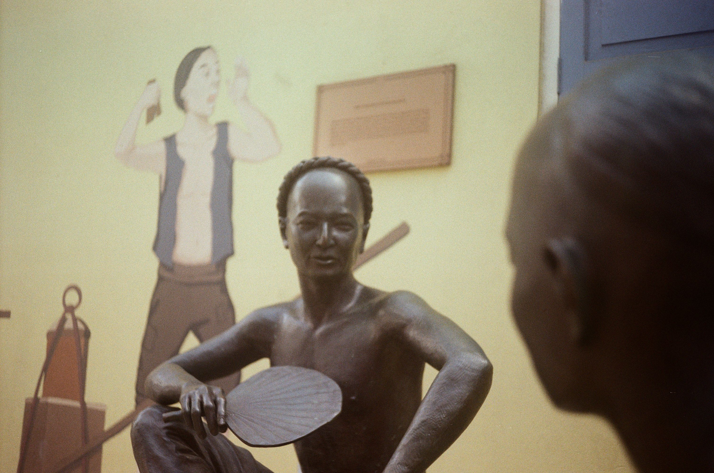
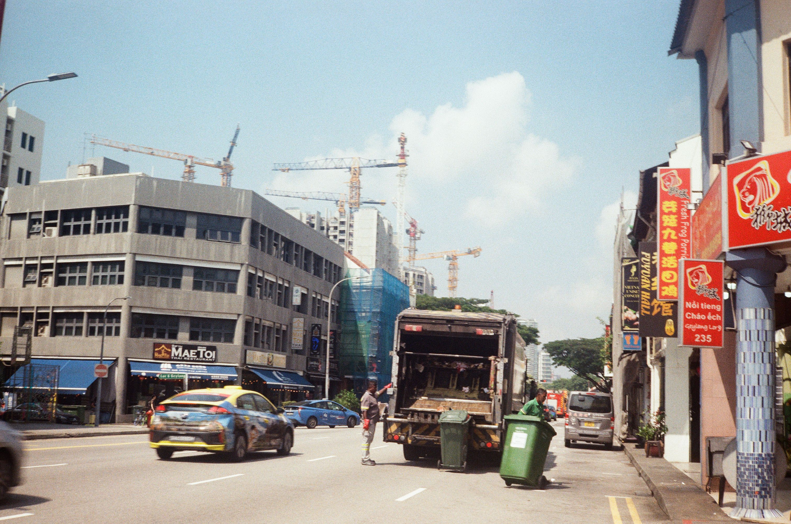
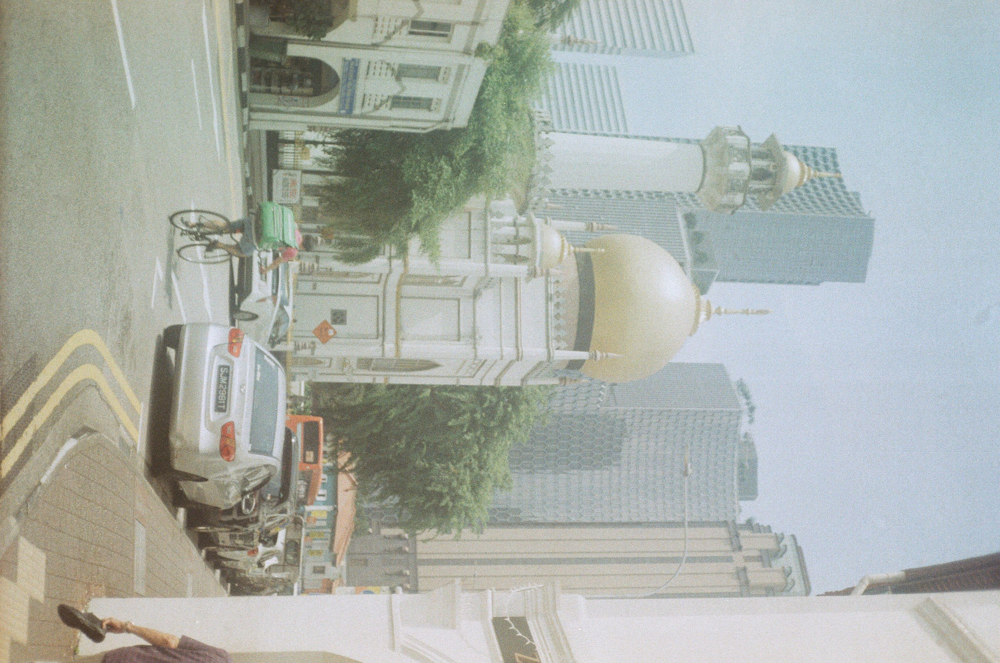
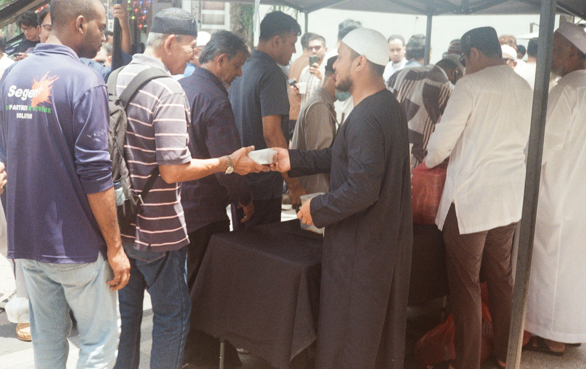
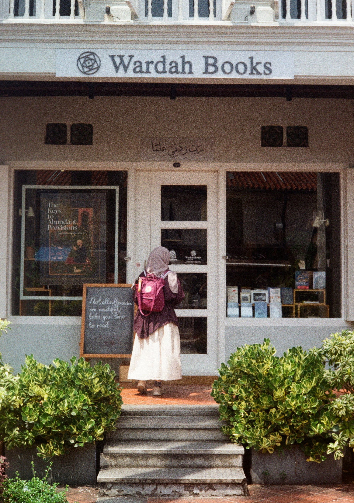
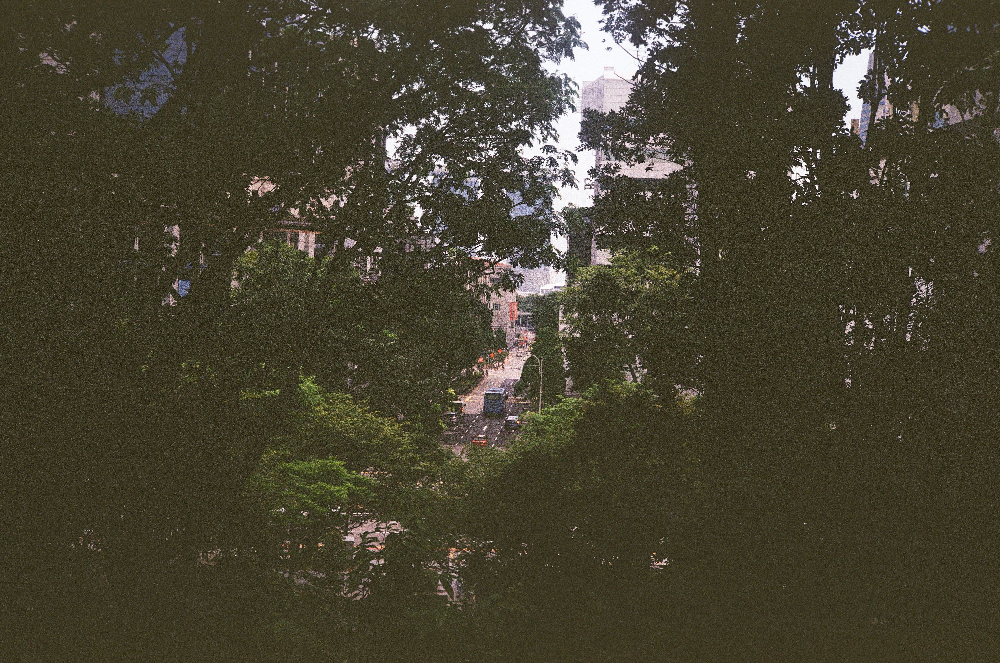

Back in late September, my wife and I went for a vacation, a long-awaited vacation. I "finally" can make the time since this also marks my transition to a new job at a new company. I got 2 weeks "off" and my wife works remotely now. So, we make it works.
We've already got several places on our wishlist, considering the budget and timing, we decided Singapore is an option we can manage in such a short period of preparation. It's not that far (accessibility wise) yet far enough the ambient from Indonesia, we don't have to worry about visa, and we can also still make the budget.
City tour is not really my thing, as in, I would just literally walk around, probably missing a lot (of time and money) if I'm in charge of the itinerary. Luckily, my wife has an "ambition" to visit as many bookstores and library as possible, so she prepared every point of the itinerary: which bookstores to visit and where we were going to eat. The rest of the plan was just to book the hotel and the flight. Since many things can be paid with card there, we also prepared our card.
The second my feet touched this advanced land, I can already felt the stark differences with my home country. Everything just make sense here, the signs really helped a lot, we didn't even communicate once with the locals here to find things, just consult with the signs.
This "feeling" will be the main point of my blog post, so if you are expecting a chronological story along with detailed budget and what-not, I'm sorry in advance.
During our visit, we moved around by 3 modes of transportation: bus, train, and foot. We went to the bus stop from our hotel that took roughly 5 minutes of walk, then waited the bus there, we didn't even wait for 3 minutes before the bus arrived. This short-wait is something that we experienced constantly with public transport here. The bus also somehow never even close to its maximum capacity, so we rarely have to stand up. We always use our card to pay for the bus, the machine was really quick. It's significantly quicker than I usually have to when using public transport in Indonesia. This small difference is somehow felt very pleasing.
While walking, I easily noticed that the street is very clean. Although I would still see some trashes around an overloaded trash bins, but frankly those are very well expected, sometimes the trashes outside the trash bin was "organized" as well.

Talking about walking, I also noticed that we were inside a building a lot of time, or at least under a shade. It made the walking experience, again, feel very pleasing for layered reasons. First, the fact that we were often inside a building while walking was because some of the MRT stations are integrated with these buildings, which most of them are malls. It really alleviated the burden of thinking to have an "additional" walk to really get to the place that I wanted to visit. Most of the time, transportation is literally a means to an end. I rarely have a thought "I want to go to that station", instead, "I want to go to that place, but I have to get to that station to get there". Second, the heat is heating in Singapore. I think this is self-explanatory on why being under a shade while walking is perhaps a necessity. On top of that, it gave an impression that the governance here is working really well, because I would imagine the bureaucracy to integrate these stations and buildings must had been involving a lot of parties.
According to my observation out of the places I visited, the road here is in general wider compared to Indonesia. The bus stop that is 5 minutes walking distance from our hotel, is located on the outer part of the city, yet the road has 4 lanes. It was a one-way road btw. However, given these wide roads I rarely see private vehicle. There wasn't a single congestion in sight except obviously when there's a traffic light, but you wouldn't really call this a "congestion".
Back to the topic of walking, the sidewalk here didn't feel like a "side" walk either. I felt like being prioritized. Most of the sidewalk I walked on are also wide. So yeah, given this condition, walking felt really easy and just make sense that we did it out of common sense. We never have a thought "what's the alternative to walking?", we just walk the walk. This pedestrian-first design/decision led us to walk 22.000 steps on our second day.
Side-stepping a bit, prices here are over the ceiling. SGD-IDR and USD-IDR are quite similar. So for an Indonesian, things here are very expensive. The bus and the MRT transport price was similar to a single ride with ojol in Indonesia. Despite the prices, I don't think I ever saw a beggar anywhere here. I saw a paraplegic busking once. That's it. Seeing that led me into thinking "are these less fortunate people being taken care of by the government? Or are they 'naturally' eliminated out of Singapore". I got that second alternative because I'm under an impression that Singaporean are very productive, so maybe if you don't offer an optimum added-value, you won't be accomodated.

Our first day of going around was in Friday, so I have to do Friday Prayer. We went to Sultan Mosque in Kampong Glam. One thing I remember about the Friday prayer here is that the Friday Sermon was served along a presentation slides, so you can literally read along the entire sermon in the presentation, and alongside it the shoot of the imam delivering the sermon. Then after the prayer is finished, there are free meals provided outside of the mosque.

As a moslem, I was worried that it might be difficult to find a place to pray and we have to keep going back to this mosque or to the hotel to pray. To my surprise, there are quite a lot of mosque as well. On my POV as someone who grew up in a Muslim-majority country, some of these mosques are hidden. Well, they are not really hidden, but then again in Indonesia, most of the mosques are it's own building. In Singapore, some of these mosques are part of a block of buildings. So from the facade, it doesn't look like a mosque. But after entering the building, you'll still feel being in any mosques you ever visited, I guess.

You may notice there are not so much "vacationing" part mentioned previously. I just talk about the city and my impressions about it, then about mosques. These are things that we do everyday. This is because, I'll be honest with you, I don't really get the holiday vibe itself. This might be biased since we are mainly here to visit bookstores and walking around but overall, I felt Singapore is kind of bland for a vacation. But the sensation itslef felt really...meh. For sure there are USS and Shits there, but I don't know Maybe I need to look for more activities to do here? I don't know.
At some point, I noticed, Singapore doesn't seem to have a very serious problem. From my perspective, a perspective of a person living in a country full of problems, where everyday a politician made some stupid evil statement and then just get away with it, the news broadcasted in Singaporean tv channel seemed very neglectible.
One of the TV channel was delivering a news about problem in other regions. Japan's conflict (Ryukyu) was one of them. Like, they don't have a problem of their own to broadcast? Then another one was about the literal rat problem. Yes, rat, literal one, not even "corruptor" rat. One of the market (or area) seems to have a lot of rats and the way the news was delivered, it felt like they took it seriously. They talked to the government representatives in that area, they talked to market representatives, they talked about what technology they would use to solve the problem. Crazy how this problem took roughly 1 hour of airtime.
And this is somehow added to the "bland" sensation...
